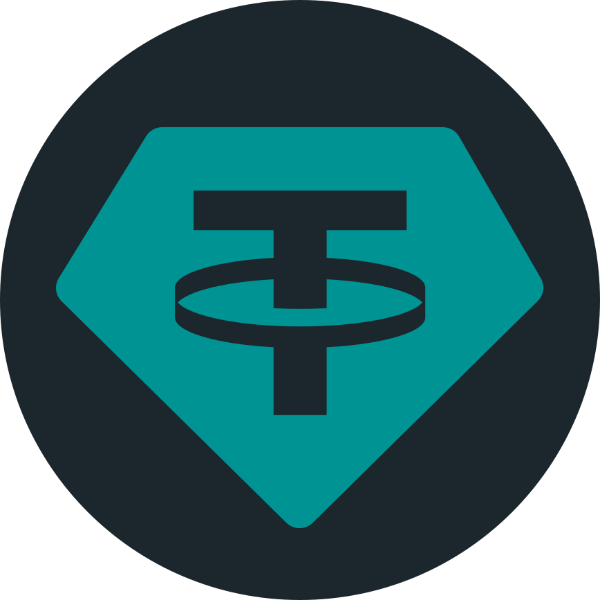

Open source, for Solana token approvals
Proof before you sign. Proof after.
Velon finds every SPL Token delegate on your wallet. Before you sign a revoke, it runs that exact instruction itself. After you sign, it reads the chain again to confirm the delegate is gone.
No install. Connecting a wallet signs nothing.
Approvals outlive the tab.
A delegate, or approval, is a key allowed to spend tokens from your token account. On Solana, apps you used once (DEXs, aggregators, payment and subscription apps) can be left holding that authority over your USDC, USDT and other tokens, long after you closed the page.
When a protocol is compromised, every wallet that approved it needs a fast revoke it can trust: one that is executed and checked before you sign it, and confirmed on chain after.
- USDCEXAMPLE…ACCT1 Example DEXmay spend 500.00
-

USDTEXAMPLE…ACCT2 Example payments appmay spend 2,000.00 - Other tokenEXAMPLE…ACCT3 Example aggregatormay spend 120.00
An approval is a key that can still spend.
Wallets, treasuries and exploit responders all need to see which keys those are, for every token account.
Four steps. Two of them are proof.
-
01Observe
Read what is true now.
Velon reads your token accounts and lists every SPL Token delegate: which account, which key, and how much it may spend. It records the finalized bank it read from, the cluster’s activated feature set, and checks the SPL Token program bytes against the verified build.
-
02Execute
Run the revoke before you see it.
Velon executes that exact Revoke instruction itself, against the finalized bank it observed, with the cluster’s features and the verified program. Your provider’s RPC simulation must reach the same resulting token account state. If the two disagree, nothing is offered for signing.
-
03Sign
You approve, in your own wallet.
Connecting a wallet signs nothing. The revoke appears in your wallet like any other transaction, and you approve it there. The cost is a normal Solana network fee, a fraction of a cent.
-
04Verify
Then read the chain again.
After you sign, Velon waits for finalization, reads the account again and confirms the delegate is gone. Only then does it issue a verification ID.
A receipt that does not need the chain to believe it.
Every verified revoke ends with a verification ID and the evidence behind it. Receipts replay from that recorded evidence, without trusting the chain again.
- 1The finalized bank the revoke was executed against.
- 2The verified SPL Token program bytes and activated feature set.
- 3Velon’s result and the RPC simulation, which had to match.
- 4Your signature, and the finalized re-read with the delegate gone.
Verified revoke
Example receipt · mainnet
- Token account
- EXAMPLE…ACCT
- Delegate before
- EXAMPLE…DEX
- Delegate after
- none
- Executed against
- finalized bank
- Program
- SPL Token, verified bytes
- Feature set
- cluster-activated
- Execution vs simulation
- match
- Signature
- EXAMPLE…SIG
- Re-read, finalized
- delegate absent
What it covers today, and what it only shows.
| Authority | Where | Status |
|---|---|---|
| SPL Token delegates Any key approved to spend from a token account | Mainnet, devnet, local test validator | Revoke with proof |
| Solana Subscriptions grants Listed with your other permissions | Read-only | Visible, not yet revocable |
| Token-2022 accounts Delegates on Token-2022 token accounts | Read-only | Visible, not yet revocable |
Wallets, treasuries and exploit response.
-
i
Wallets
A wallet can list the delegate on each of a user’s token accounts, and offer a revoke that has already been executed and matched against the RPC simulation before the user is asked to sign.
-
ii
Treasuries
A multisig’s token accounts can carry delegates too. Its members need the list of keys that can spend from them, and a verification ID showing a revoke removed the delegate.
-
iii
Exploit response
When a protocol is compromised, every wallet that approved it needs to revoke quickly. Each verified revoke ends with a re-read of the account and a verification ID a responder can check.
Open source, end to end.
The runtime that observes, executes and verifies, the SDK, and the console all live in one public repository. Run it locally with recorded evidence, point it at a mainnet or devnet RPC endpoint, or start a local test validator with the real SPL Token program.
dakewamama/velon on GitHub# Bun 1.3.14+, Node 22, stable Rust
$ git clone https://github.com/dakewamama/velon.git
$ cd velon/app
$ npm ci --ignore-scripts
$ bun run demo
# open http://127.0.0.1:3000- runtime/
- Observes finalized state, executes revokes, verifies results. Rust.
- sdk/
- Protocol adapters and reviewed signing. Rust and TypeScript.
- arm/
- The permission model: who can do what, to which account. Rust.
- app/
- The console. TypeScript on Bun.
Try a revoke on a disposable chain.
The test bench gives you a test permission on a disposable test chain and a test wallet to revoke it with. Nothing to install, nothing real at stake.